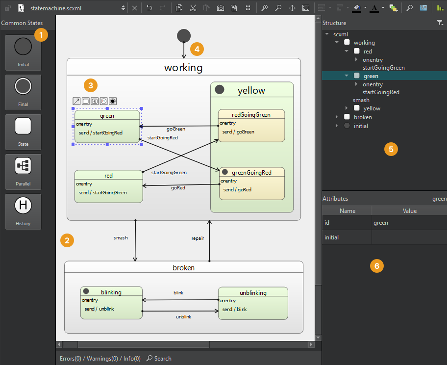

Create state charts
You can use Qt Creator to create applications that embed state machines. A file wizard creates State Chart XML (SCXML) files with boilerplate code that you can edit using an SCXML editor. You can use the classes in the Qt SCXML module to embed state machines created from the files in Qt applications.

To create a state chart:
- Select File > New File > Files and Classes > Modeling > State Chart > Choose to create an empty state chart and to open it in the SCXML editor.
- Drag a state from the Common States view (1) to the state editor (2).
- Drag child states to the initial state to create a compound state or use the tool buttons (3) to create a transition from the selected state and its target state.
- Select a state in the editor or in the Structure view (5) to edit its attributes in the Attributes view (6).
- Select the transition line (4) to add edge points to it.
- To raise or send events, for example, use the context menu commands to add executable content to the
<onentry>and<onexit>elements of states or to transitions.
See also SCXML Editor.